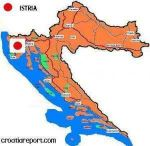

La Sușnievița a avut loc o întâlnire la care au participat autoritățile locale, cele regionale, Ambasada română de la Zagreb, reprezentată de Domnul Ambasador George Cosmin Dinescu și de însărcinatul cu afaceri economice, Domnul Antohi, Comisia ONU pentru Croația, Asociația culturală istroromână "Andrei Glavina," reprezentată de Emil Petru Rațiu, Dl. Prof. Goran Filipi, de la Universitatea din Pola, eminent studios al dialectului istro-român.
Întrunirea s-a desfășurat la școala din Sușnievița, în prezența unui public alcătuit în majoritate din locuitorii istroromâni.
 În numele autorităților locale a vorbit primarul comunei Cârșan, Dl. Zdravko Vidak, de care aparține satul Sușnievița, care a urat bun venit oaspeților, apoi a luat cuvântul vicepreședinta regiunii Istria, Doamna Prof. Viviana Benussi, care a subliniat caracterul multicultural al Istriei, unde alături de majoritatea croată trăiesc italieni și alte minorități naționale, între care istroromânii.
Domnia sa a spus că acest caracter multicultural al Istriei trebuie menținut, deoarece el s-a format în decursul unei istorii multiseculare și el reprezintă o bogăție culturală a acestei regiuni, indiferent de numărul uneori mic al respectivelor comunități. A luat apoi cuvântul Doamna Louise Vinton, președinta misiunii ONU pentru dezvoltare în Croația, prezentă la întrunire împreună cu adjunctul misiunii, Domnul Vitalie Vremis, din Republica Moldova, care în acest fel, printr-o fastă întâmplare, parcă simbolică, a întărit prezența noastră românească în cadrul acestei întâlniri, desfășurată la extremitatea de apus a unei fracțiuni etnice românești.
Doamna L.Vinton, în alocuțiunea sa, a arătat că misiunea ONU pentru dezvoltare vrea să se implice în susținerea idiomului istroromân, grav amenințat cu dispariția. Apoi a luat cuvântul Domnul Ambasador Cosmin Dinescu, care a exprimat dorința de creare a unor condiții mai bune pentru supraviețuirea etnică a comunității istroromâne, începând cu școala, prin predarea de ore de limbă maternă, care deja există de doi ani, ca program de după școală, în afara cursurilor, care să fie integrate însă în programul școlar. Domnul ambasador a vorbit de disponibilitatea statului român de a se implica și material, prin alocarea de fonduri pentru repararea clădirii școlii din Sușnievița și crearea în cadrul școlii a unei Case Istroromâne, cu expunere de documente materiale ale trecutului acestei populații, sală de conferințe, etc.
După alocuțiunea Domnului Ambasador – primul ambasador român care se implică în susținerea istroromânilor- a luat cuvântul Președintele Asociației culturale istroromâne "Andrei Glavina". El a ținut alocuțiunea, ca de obicei când publicul este format în majoritate din istroromâni, în dialect istroromân, salutând înalții oaspeți și spunând că măsurile în sprijinul lor și al limbii lor, istroromânii le așteaptă de mult timp, și ele ar fi fost mai ușor de aplicat prin școală, etc, mai înainte, când numărul istroromânilor era mai mare decât astăzi - iar prin anii 1960-70, copiii istroromâni care începeau școala nu cunoșteau altă limbă înafară de limba lor maternă, trebuind să facă un an pregătitor pentru a învăța limba croată- , dar atât timp cât există viață, este încă și speranță.
Apoi a urmat partea artistică a manifestării, cu recitări ale elevilor de la școala din Sușnievița în limbile croată și română – în forma dialectului istroromân- urmate de un spectacol de balet, foarte frumos, executat de elevele din ultimii ani ai școlii medii din Cepich, de care aparține și școala elementară din Sușnievița. A urmat apoi un bufet, după care oaspeții au plecat la școala medie "Ivan Goran Kovacic" din Cepich, unde s-a discutat mai concret despre implicarea financiară a statului român în renovarea clădirii școlii din Sușnievița și modalitățile acestei implicări, prin atragerea de fonduri europene – Croația fiind țară de proximă aderare la U.E. - și contribuția ONU la acest proiect.
Totul a decurs frumos, dar se impun unele observații. Credem, anume, că se impune includerea predării dialectului istroromân – cu funcție socială de limbă în comunitate- în cadrul programului școlar, temă care va constitui, dealtfel, obiectul întâlnirii de la sfârșitul lunii aprilie dintre Domnul Ambasador Dinescu și Ministrul învățământului croat, iar predarea limbii trebuie să se facă în școală după un program didactic bine pus la punct de către specialiști români în dialectologie, iar nu după improvizații.
În cadrul acestui program trebuie înfățișat copiilor adevărul istoric asupra originii lor, a Românilor din Istria și a limbii lor, aceasta făcând parte din marea familie românească, spulberându-se astfel inocularea neștiinței interesate și șovine, cultivată în ultimii ani, de enucleare a fundamentului românesc a acestui dialect, întreprinsă de o persoană fără cunoștințe în materie, din America, care vrea să rupă orice legătură a acestei limbi cu originea și trecutul ei românesc, botezând istroromâna, în scop politic, "jeianschi și vlașki limba".
De asemeni, pentru ca fondurile pe care statul român intenționează să le aloce pentru repararea școlii din Sușnievița să nu se irosească într-un conținător fără conținut, credem că o minimă parte din aceste fonduri trebuie destinată salarizării unui profesor motivat național și cunoscător al dialectologiei române, care să predea, după un program didactic bine pus la punct, la școala din Sușnievița și posibil, și la școala medie de la Cepich, pentru elevii de origine istroromână, provenind de la școala din Sușnievița; aceasta este în deplin acord și decurge din tratatele și acordurile bilaterale româno-croate, ca "The agreement on co-operation in the fields of education, culture and science between the Government of Romania and the Government of the Republic of Croatia," încheiat la Zagreb la 19 mai 1993, art. 2d, art. 4 și art. 15, ca și din "Tratatul privind relațiile de prietenie și colaborare dintre România și Croația," încheiat la 18 februarie 1994, precum și din vasta legislație internațională în materie, începând cu "Charta Europeană a limbilor regionale sau minoritare," din 5 noiembrie 1992, ratificată de mult timp în România și Croația, și încheind cu relativ recentul proiect de rezoluție N.11595 a Adunării Parlamentare a Consiliului Europei asupra situației minorității istroromâne din Croația, depus de deputatul moldovean Vlad Cubreacov, care se află în examenul Comitetului de Experți ai Chartei.
Cum știm, din experiență, că aflarea unui profesor motivat național și cu cunoștințe de dialectologie românească, care să meargă în Istria, nu este o sarcină ușoară, credem că trebuiesc folosite resursele pe care ni le oferă comunitatea istroromână, adică acele persoane din mediul local, care să fie cointeresate, printr-o justă salarizare din partea Statului român, la desfășurarea acestui program.
La Sușnievița, există o tânără licențiată de la Universitatea din Rijeka – Fiume - , de etnie istroromână, întoarsă de câtva timp în satul natal, Doamna Viviana Berkarich. Credem că dânsa – care a fost și în România- ar putea fi încurajată să frecventeze în țară un curs scurt de specializare, pentru a veni să-i învețe limba strămoșească pe copiii istroromâni, și dânsei i s-ar putea alătura, când acesta va exista, și un profesor specializat în dialectologie din țară. Dealtfel, dânsa predă deja la Sușnievița lecții de istroromână, în afara programului școlar – după orele de școală.
Înainte de-a pleca din zonă, ne abatem, ca într-un arc ideal peste timp al acestei comunități, la casa natală a aceluia care a fost destinat să fie învățător istroromân la Sușnievița, Domenico Cvecich, adus pentru aceasta în 1935 la școala Normală de la Blaj de către Prof. Sever Pop, proiect zădărnicit de istorie prin izbucnirea celui de-al doilea război mondial. Observăm acum, casa veche de piatră a acestuia rămasă de ani nelocuită, reîntinerită ca de o miraculosă primăvară și transformată în pensiune turistică, de un harnic întreprinzător din Labin – Albona-. Plecăm din Sușnievița, cu credința, așa cum am arătat și în scurta alocuțiune ținută la școală, că atâta timp cât o comunitate dă semne de viață, există încă o speranță pentru viitor, numai să fie voință politică care să o susțină.
La ora apariției acestui articol, la Sușnievița se sărbătorește Paștele catolic... Hristos a înviat, Sușnievița!
O corespondență pentru Romanian Global News de la Emil Petru Rațiu, Președinte al Asociației culturale istroromâne "Andrei Glavina."
April 11, 2012
© 2012 Romanian Global News